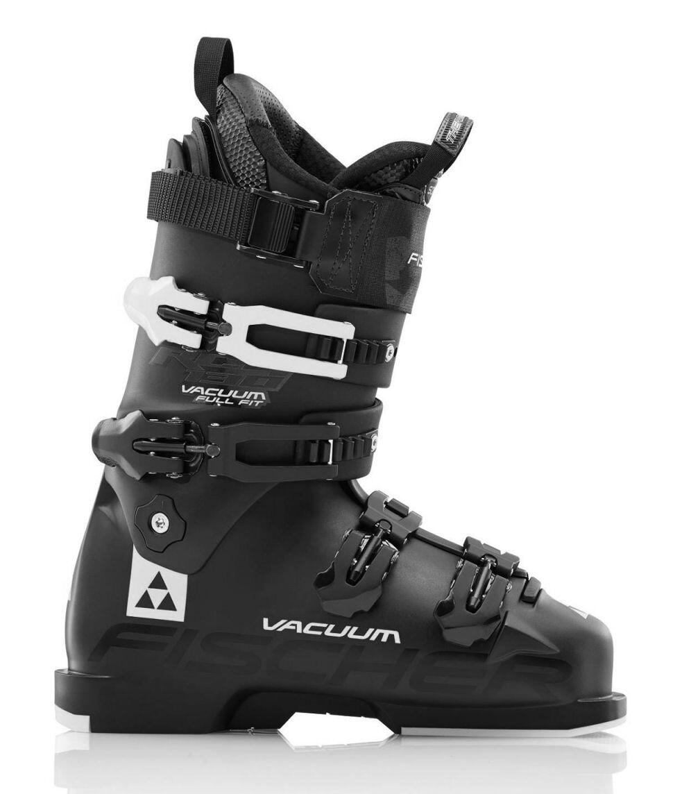
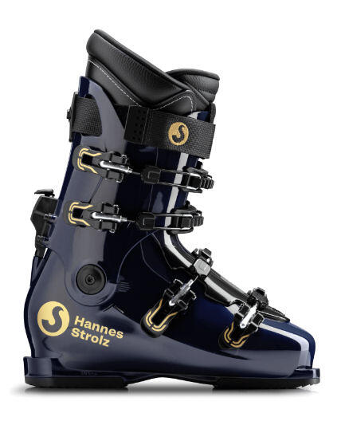

Op maat gemaakte skischoenen
Behalve dat wij uw eigen skischoenen kunnen aanpassen, kunt u bij ons ook een skischoen op maat kopen. Dit houdt in dat wij u een nieuwe skischoen aanmeten die aan uw voet is aangepast.
Skischoenen op maat gemaakt: onze werkwijze
Wij leveren twee soorten op maat gemaakte skischoenen, die wij hieronder kort zullen beschrijven.
Welke optie u uiteindelijk ook kiest: we beginnen altijd met een intakegesprek en een kort podologisch consult. Hieraan zijn voor u geen kosten verbonden. Tijdens dit consult wordt uw voet uitvoerig opgemeten, uw skigedrag geëvalueerd, naar uw houding gekeken en eventuele problemen tijdens het skiën besproken. Aan de hand van de resultaten krijgt u van ons een advies over de schoen die het beste bij u past. Hierbij wordt rekening gehouden met uw skiniveau, voetbreedte en hoogte, fysieke beperkingen en eventuele andere punten die om aandacht vragen.
Een belangrijk factor voor het bepalen van het type schoen zijn de biomechanische kenmerken. Bijvoorbeeld de flexibiliteit van uw enkelgewricht (dorsaalflexie) en de stand van uw knieën en hielbeen. Tenslotte bepalen we met behulp van een podoscoop uw voettype. Heeft u in het dagelijks leven ook voetklachten of heeft u momenteel bijvoorbeeld steunzolen van uw eigen podoloog, dan komt dit tijdens het intake-gesprek uitgebreid aan bod. Heeft u uw oude skischoenen nog? Neem ze a.u.b. mee!
Het moge duidelijk zijn dat het doel van dit gesprek is om een zo goed mogelijk beeld van u als skiër te krijgen.
Wilt u een afspraak maken maar weet u nog niet welk soort skischoen geschikt is voor u? Kiest u dan 'Aanmeten Op Maat Gemaakte Skischoenen'.
Wat wilt u doen?
- Wat is bootfitting?
- Mijn skischoenen aanpassen
- Op maat gemaakte skischoenen
- Afspraak met de (sport) podoloog

De twee soorten maatschoenen:

VacuumAls het gaat om pasvorm is de buitenschaal het belangrijkst. Nadat de juiste schoen is bepaald wordt de buitenschaal d.m.v. een warmte- en compressiesysteem op uw voet en onderbeen aangepast. De Ultralon binnenschoenen worden voorzien van sportzolen, afgestemd op uw voettype.
Daarnaast worden (indien nodig) biomechanische onvolkomenheden gecompenseerd.
Het resultaat is een maatschoen welke voor verreweg de meeste skiërs uitstekend voldoet.
Belangrijk om te vermelden: er is keuze uit verschillende soorten en modellen: van bijvoorbeeld all moutain tot (semi)race skischoenen. Een keuze gaat altijd in overleg met u als klant.
Het gehele proces duurt 1 à 1,5 uur.
Prijsindicatie: € 650 – € 750

StrolzIndien u kiest voor een Strolz schoen, kiest u voor de absolute top in pasvorm en kwaliteit. Beter dan een Strolz skischoen is er momenteel niet te krijgen.
Tijdens de eerste afspraak worden, na het basisconsult, uw voeten en onderbeen uitvoerig opgemeten. Wij maken foto's en er wordt een voetscan gemaakt. Net als bij orthopedische schoenen wordt er een houten leest van uw voet gemaakt. Aan de hand van die leest wordt de buitenschaal voor u geheel op maat gemaakt. Bij een Strolz schoen hoort ook een met de hand vervaardigde lederen binnenschoen. Uiteraard ook op maat gemaakt.
Tijdens de tweede afspraak (ongeveer 10 dagen later) maken wij de binnenschoen op maat d.m.v. foaming. Tenslotte krijgt u een set op maat gemaakte steunzolen.
Meer informatie vindt u op onze speciale Strolz Website.
Prijs: € 1195,-
Hulp bij keuze skischoen op maat
Wij kunnen ons goed voorstellen dat u nog niet weet welke van de twee opties voor u geschikt is. De meeste klanten die bij ons binnenkomen voor een paar op maat gemaakte skischoenen weten dat niet.
Dat is geen probleem: tijdens het eerste consult wordt vanzelf duidelijk wat het beste bij u past. We houden daarbij uiteraard rekening met uw budget, uw skiniveau, uw verwachtingen etc.
Een paar op maat gemaakte skischoenen koopt u niet voor één seizoen en een goed advies is cruciaal. Hiervoor nemen wij uitgebreid de tijd. Vandaar dat wij uitsluitend op afspraak werken.
Volledige maatschoen van Strolz
Switch between content by toggling the button
Fischer Vacuum
Maatpak – op maat gemaakte skischoen
Net als bij een maatpak gaat het bij een Strolz maatskischoen (een volledig op maat gemaakte skischoen) om een geheel gepersonaliseerd product. Er zijn in principe geen beperkingen qua maatvoering of voettype. Zelfs een voetlengteverschil is geen probleem. Evenals een maatkostuum wordt deze skischoen met de hand vervaardigd. Het precies opmeten van voet, enkel en kuit zijn de basis van de skischoenen maar ook biomechanische kenmerken zijn belangrijk.
Het pak naar maat – een skischoen op maat
De Vacuüm skischoen laat zich het beste vergelijken met een kwaliteits pak van bijvoorbeeld Van Gils of Hugo Boss. De maat wordt zo gekozen dat die zo dicht mogelijk in de buurt komt van de maat van de klant. En daarna vakkundig op maat gemaakt. De huidige 'skischoenen naar maat' zijn tegenwoordig van hoge kwaliteit. Fabrikanten hebben de laatste jaren veel tijd geïnvesteerd in pasvorm en de kwaliteit van zowel de schaal als de binnen schoenen. Hoe goed de pasvorm ook is, het blijft een generieke pasvorm die wordt gepersonaliseerd.